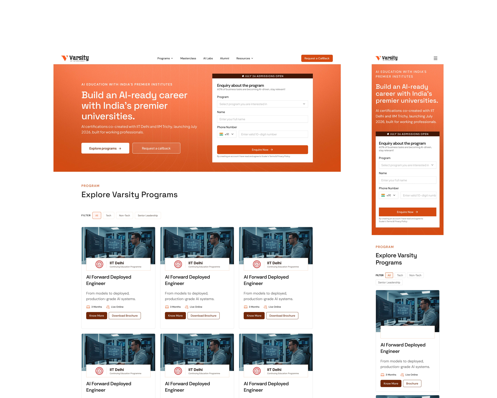
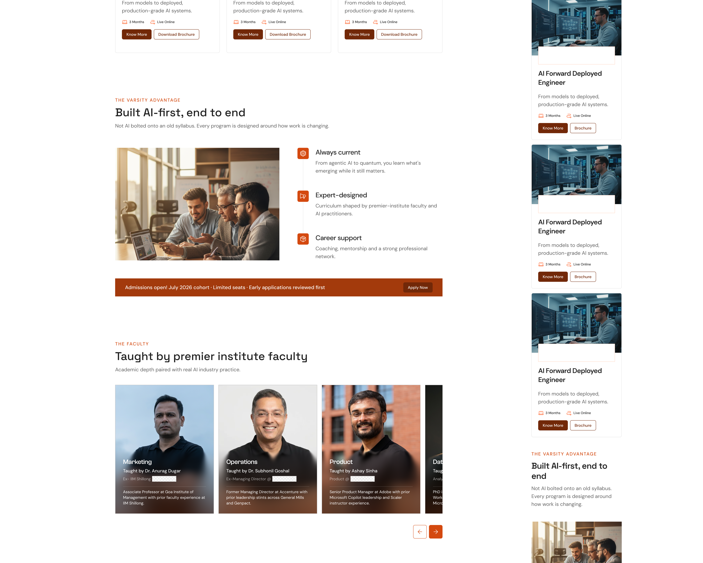
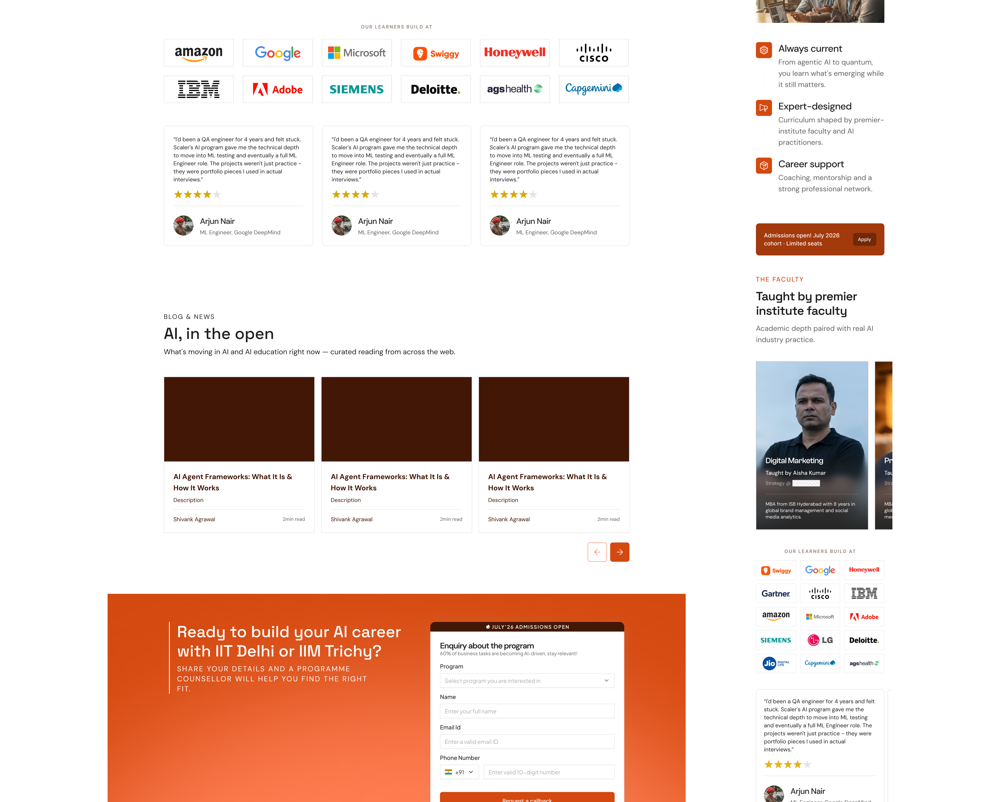
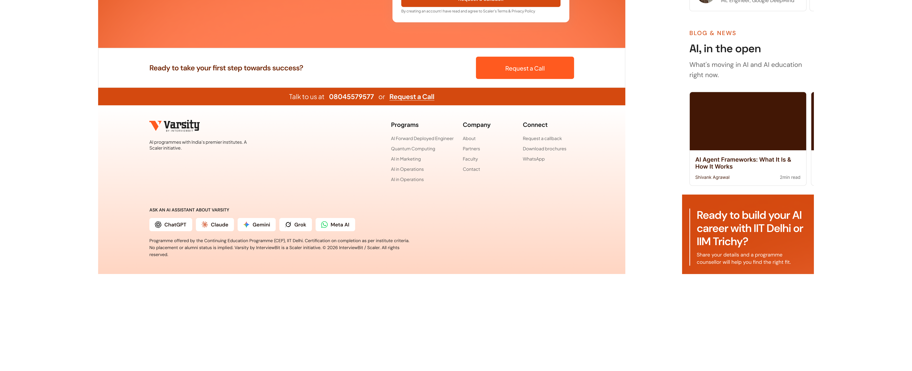
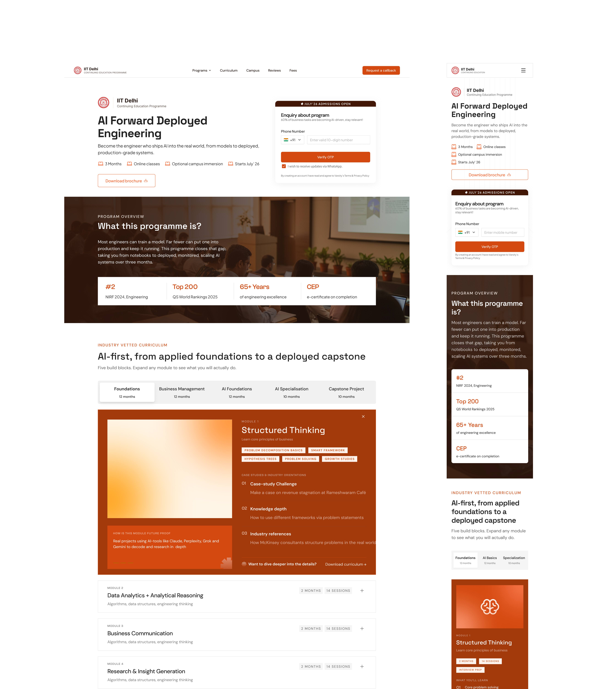
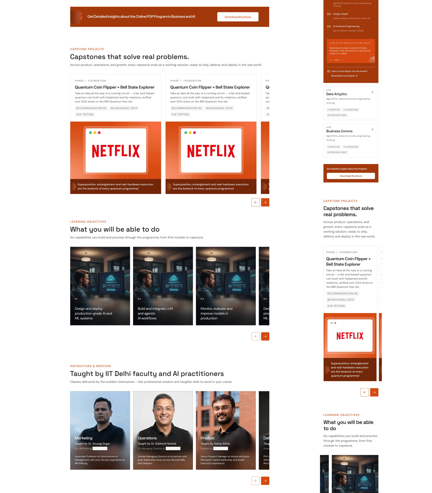
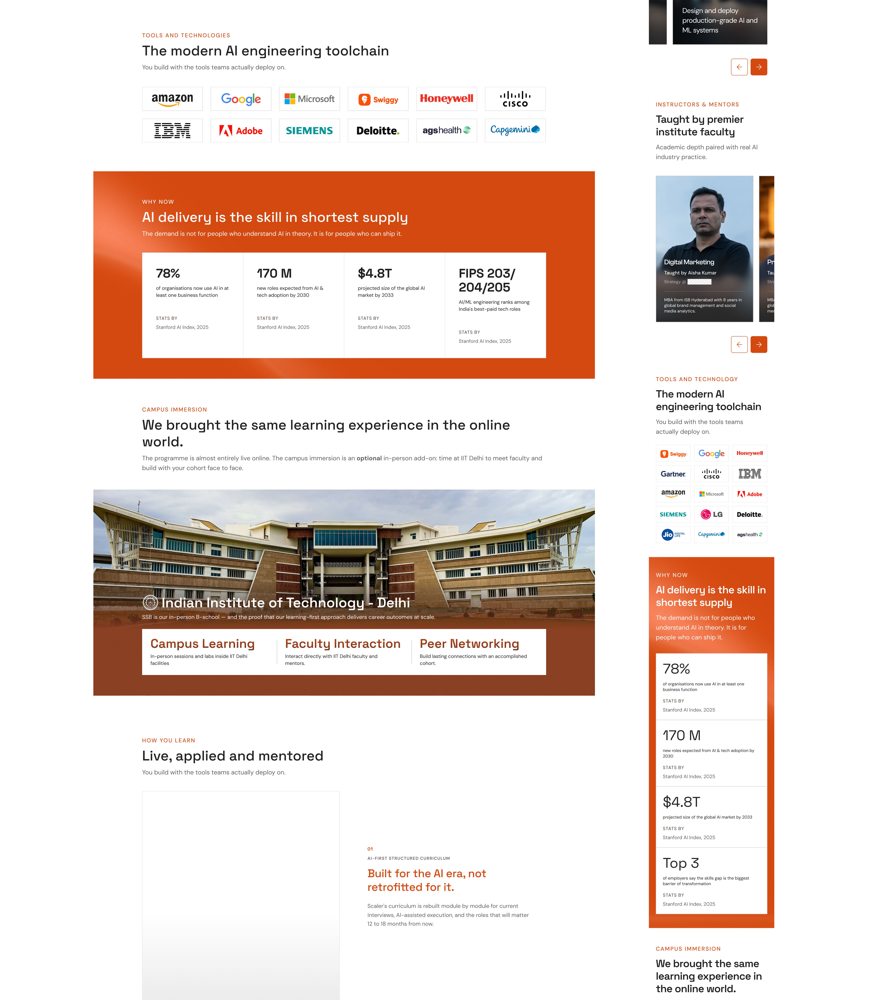
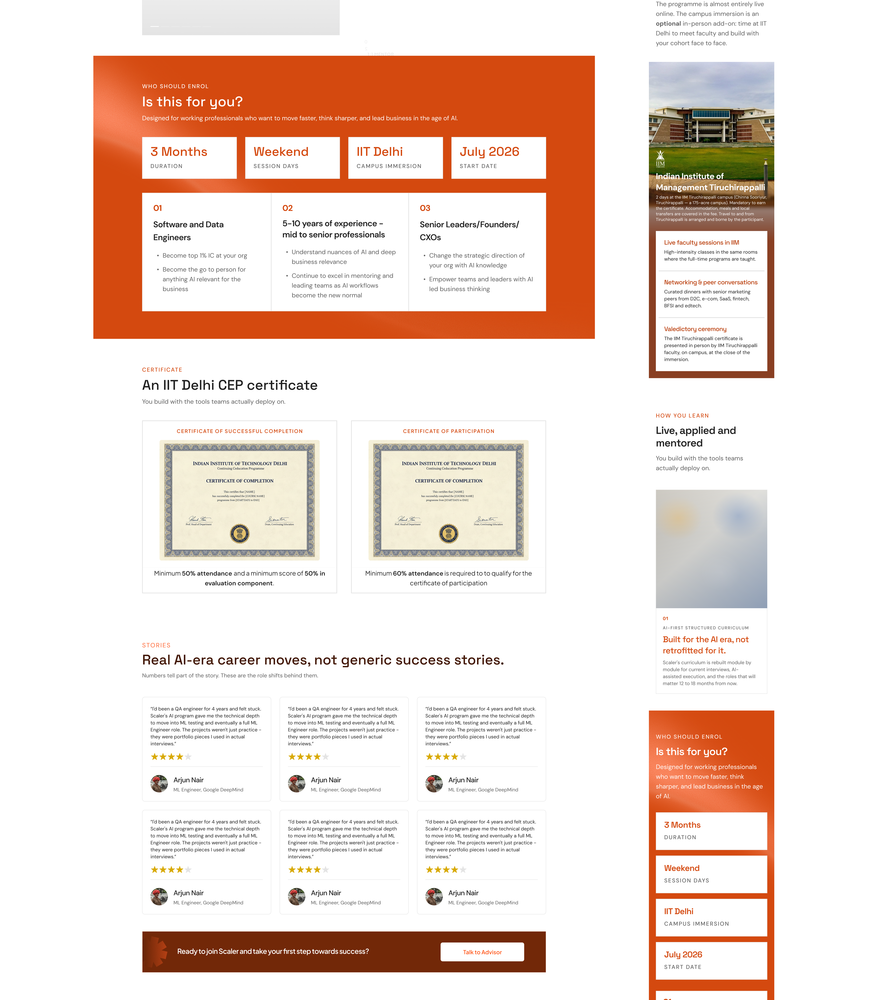
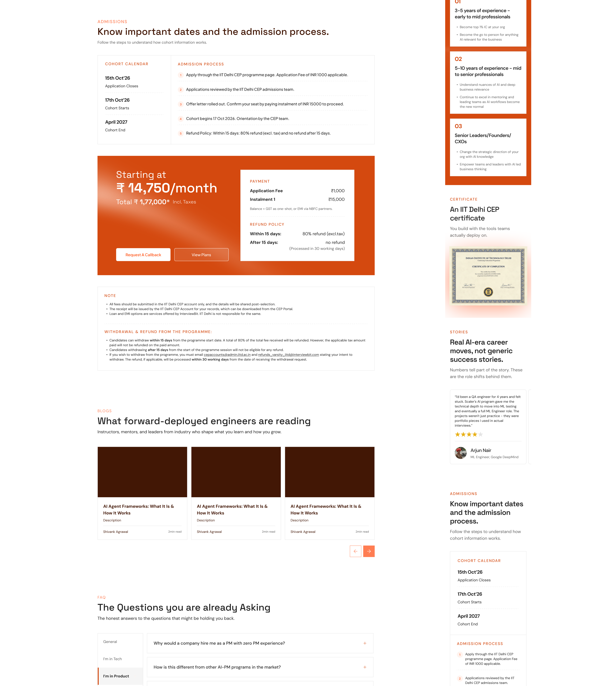
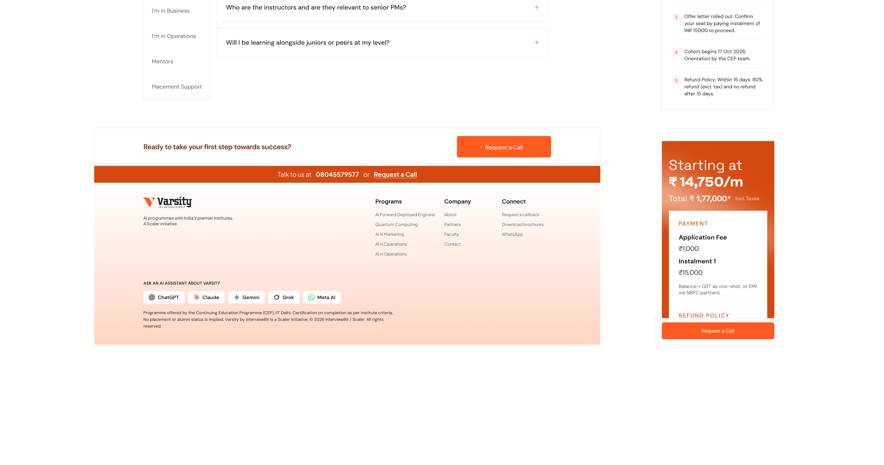

500+ warranties a month moved through a dealer flow designed for bulk buying.
Dealers could compare plans, purchase several units with visible volume pricing, and activate each warranty when the matching car was ready.
With 6 years of experience across ed-tech and marketplaces, I design and ship growth, platform, and AI-assisted learning products. I combine systems thinking, interaction design, and rapid prototyping to deliver measurable user and business outcomes.


A governed Storyblok system enabled Marketing and SEO to launch independently. From Jul 23–31, 24,541 visitors generated 2,220 leads across six pages; the first two program launches progressed to 58 payments by Jul 31, 2026.
View Case Study ↗
Across the first launch cohort, 134 of 226 learners enabled the new LMS. The redesign channelled that early adoption across Path-maker, Inside Class, and Problem Solving into one connected experience, giving learners a clearer next action at every stage.
View Case Study ↗Dealers could compare plans, purchase several units with visible volume pricing, and activate each warranty when the matching car was ready.
In a 6-year journey across ed-tech, marketplaces, growth systems, and AI-assisted learning experiences.
Scaler Growth System
Redesigned the growth funnel for learners already showing intent: discovery, live-session attendance, callback requests, onboarding, and trust-building moments before paid enrollment.
Scaler's growth funnel already had high-intent learners coming from ads, webinars, referrals, and program pages. The work was about making that intent visible across discovery, reminders, callback requests, onboarding, and trust-building moments before paid enrollment.
The design system connected scattered conversion surfaces into a clearer journey, helping learners understand fit faster and giving downstream teams better context for every conversation.
Scaler already had learners entering from ads, webinars, referrals, and program pages. The friction was in understanding who was ready to act, what they needed next, and which moments should nudge them toward a live class, callback, or enrollment decision.
Learners moved across discovery pages, forms, reminders, sessions, and counseling without one consistent conversion logic.
Forms and CTAs collected contact details, but missed readiness, goal, timing, and program-fit signals.
Interested learners signed up for live sessions, then lost context before the event or forgot why it mattered.
High-intent learners needed proof from alumni outcomes and career relevance before committing to the next step.
Varsity by InterviewBit
A governed Storyblok publishing system that enabled Marketing and SEO to launch independently, converted 24,541 visitors into 2,220 leads across six pages, and progressed the first two program launches to 58 payments by Jul 31, 2026.
We converted a custom, multi-day landing-page build into a repeatable publishing system. An idea is shaped on Claude, styled in Figma, wired into Storyblok components by engineering, set to a house style by design, and then generated from a single prompt through reusable skill files.
The finished system is handed to Marketing and SEO, who can run and optimize each program page independently to lift V2L (Volume-to-Lead) and L2P (Lead-to-Payment), without waiting on design or engineering.
storyblok-program-page turns a partner brochure into a full, on-brand, published program page in one prompt, with approval gates and image generation.
storyblok-site-audit checks images, SEO, social cards, structured data, and brand safety inside the CMS before publish.
varsity-page-audit checks the live page with link audits, CTA/modal tests, and tier-1/tier-2 learner comprehension review.
Varsity launches certificate programs with multiple partner institutions such as IIT Delhi and IIM Trichy. Every program page is structurally identical but content-different: hero, overview, 12-module / 4-phase curriculum, objectives, tools, campus immersion, certificate, pricing, EMI, FAQs, lead forms, custom illustrations, partner logos, metadata, and social presence.
| Cost | What it looked like |
|---|---|
| Time | Every institution or program restarted the same multi-day build from scratch. |
| Inconsistency | Section structure, image style, copy depth, and tone drifted from page to page. |
| Go-live risk | Heavy images, missing alt text, no social card, stale placeholders, and cross-brand leaks could reach production. |
| Growth bottleneck | Marketing and SEO could not keep testing campaign variants without design or engineering dependency. |
Five beliefs shaped the system and decided where automation should help versus where human judgment should stay in control.
The reusable asset is the workflow: format, style, gotchas, safety rails, and release checks. Not a static design file.
The skill file lets another team reproduce months of design and engineering decisions in one prompt.
Storyblok stores URL-baked assets, so releases require safe reference swaps inside the story.
Humans review content and imagery, while mechanical steps run without unnecessary approvals.
The system exists to move V2L and L2P, not just to publish faster.
Ideate on Claude with throwaway HTML prototypes, decide sections, story, order, tone, overview structure, and smaller-viewport above-the-fold behavior.
Design the screens in Figma, then translate them into reusable Storyblok bloks, nested curriculum components, and root-level forms.
Extract hard facts from partner brochures, expand thin modules into structured curriculum content, generate copy, imagery, uploads, and CDN wiring.
Publish under the institution folder, go live clean with SEO and brand-safety checks, then hand off to Marketing and SEO for independent iteration.
| Prototype | What it explored |
|---|---|
index.html | The original Varsity by InterviewBit layout. |
index-supermemory.html | A cleaner, editorial, content-forward direction. |
index-clickup.html | A bold, conversion-heavy marketing direction. |
index-syncup.html | A product-led narrative direction. |
program.html | The first dedicated program page, separate from the home page. |
The file Varsity Design includes Final Screens for desktop 1440 px and mobile 360 px, plus supporting legal and lead-capture screens.
| Figma screen / artboard | What it is |
|---|---|
| Home page (desktop + mobile) | The Varsity landing page: hero, social proof, programs, and footer in desktop and mobile. |
|
    |
|
| Program page (desktop + mobile) | The 18-section program template: hero, curriculum, faculty, pricing, FAQ, and lead surfaces. |
|
      |
|
| Enquiry / discovery form | Low-friction phone-first card: "JULY'26 ADMISSIONS OPEN", "Enquiry about program", WhatsApp opt-in, Terms link, default/filled/error states. |
| Request a Callback modal | Deeper lead form capturing full name, email, phone, graduation year, and experience. |
| Payment & admissions screens | Fee card, admission-process steps, refund and withdrawal copy. |
| Terms & Privacy | Tabbed legal pages including the Enrollment & Payment tab. |
| Component library | Navbar, USP cards, faculty cards, program cards, tool/vendor logos, video and explainer frames. |
Keeping the order fixed makes each page feel like one product and lets the builder skill assemble any program consistently while swapping only the content.
| # | Storyblok section | Purpose |
|---|---|---|
| 1 | navbar | Top navigation and primary CTA. |
| 2 | program_hero | Above-the-fold title, value proposition, and callback CTA. |
| 3 | overview_band | Scannable overview: duration, format, and key facts. |
| 4 | curriculum_section | 12-module / 4-phase curriculum with nested tracks, modules, and case studies. |
| 4b | projects_section | Optional capstone/project split out of curriculum. |
| 5-8 | CTA, objectives, faculty, tools | Conversion prompt, learning outcomes, instructors, and official tool/vendor logos. |
| 9-13 | Why now, how you learn, campus, certificate, audience | Market rationale, learning model, immersion, authority, target profiles. |
| 13b | admissions_section | Optional cohort calendar and admission process for partner programs. |
| 14 | pricing_band | Fee, GST, EMI table, View Plans modal, and partner-account compliance note. |
| 15-18 | FAQ, CTA strip, top strip, footer | Objection handling, closing prompt, announcement strip, and footer. |
| Root | forms | Callback and brochure lead-capture forms. |
curriculum_section -> curriculum_track -> curriculum_module -> curriculum_case_study. Each module carries title, tag chips, duration, case studies, and a future-proof rationale.The reference pages establish a visual and verbal system that later pages inherit through the skill file.
Warm-copper/orange 3D concept art with cinematic glow and strictly no text. Text-prone concepts use hardened object-only prompts.
The copy voice is fixed on reference pages and reproduced by the builder skill so campaign copy stays consistent.
Generated illustrations become WebP through Pillow. Vector logos remain SVG from official brand repos for crispness and brand accuracy.
scaler-rebrand-style keeps the Scaler 3.0 visual language consistent across colors, gradients, type, spacing, component patterns, and tone. figma-syntax-build connects product-screen work to the upstream Syntax component library.The skill file is not a script dump. It carries why the work is subtle, ordered phases, credential hygiene, guard checks, brand-safety rules, and the house style.
Publishing the story is not proof that the learner experience works. Two audit skills cover CMS content/assets and live rendered behavior.
usp_2.webp optimized from 552.7 KB to 223.1 KB (-60%), 4 alt texts added, 7 targeted changes, guard checks green.*.staging.sclr.ac; on www.interviewbit.com, submit would inject a real lead into the live CRM.Latest addition, Jul 13, 2026: capstones stopped living inside the curriculum accordion and became their own reusable section.
Four Mini-Capstones and one Final Capstone were mixed with teaching modules inside the curriculum.
Created projects_section, projects_tab, project_card, and project_card_tag blueprints authored Jul 10.
Curriculum now has 15 pure teaching modules. Projects section has 2 tabs: Mini-Capstones and Final Capstone.
Reused on-brand concept art, generated a new MC4 quantum-kernel image, and added a shared deliverable-strip icon.
Each partner page carries an enrollment journey: admissions block, pricing card, EMI plans, refund copy, and lead forms.
| Flow piece | Details captured in the system |
|---|---|
| Admissions block | Eyebrow "Admissions", cohort calendar, application deadline, cohort start, orientation, and numbered steps. |
| IIT Delhi CEP steps | Apply through CEP page, ₹1,000 application fee, CEP review, offer letter, ₹15,000 seat-confirmation instalment, cohort begins 17 Oct 2026, orientation by CEP team. |
| Pricing card | Starting at ₹14,750/month; total ₹1,77,000 inclusive of taxes; payment via balance + GST one-shot or EMI via NBFC partners. |
| Compliance note | Fees submitted only to IIT Delhi CEP account; receipt issued by IIT Delhi CEP; loan and EMI offered by InterviewBit; IIT Delhi not responsible for those services. |
| Refund / withdrawal | Within 15 days: 80% refund excluding tax. No refund after 15 days. Withdrawal emails: cepaccounts@admin.iitd.ac.in and refunds_varsity_iitd@interviewbit.com. Eligible refund within 30 working days. |
| Request a Callback | Two-pane modal with branded left rail and form fields: full name, email ID, phone number with +91, graduation year, and experience in years/months. |
The design team hands over the finalized format, built content, and skill files. Growth teams can then shift copy, swap creative, re-angle sections, and keep every campaign variant on-brand.
Marketing can move sections and copy according to live campaign needs without structural drift.
Volume-to-Lead: the share of visitors who submit enquiry, callback, or lead forms.
Lead-to-Payment: the share of leads who convert into paid enrollment.
In Storyblok, each story stores the full asset URL, including format, dimensions, and content hash. Optimizing an asset creates a new URL, so changing only the asset library is not enough.
tools/call directly to the Storyblok HTTP-MCP endpoint from a script that reads the built content from a file, then re-fetches and deep-diffs the result byte-identical. Big writes go through a file, not the model.Every production write is reversible, credential-safe, and checked against brand and diff rules.
Content is approved before generation; imagery is reviewed as a candidate montage before wiring.
Audit fixes images and metadata but flags visible copy and brand issues for human decision.
Back up story JSON, keep originals for rollback, guard-check diff, draft-first when risky, verify live after rebuild.
One space equals one brand; automation cannot introduce foreign branding. Tokens come from environment, never hardcoded.
The system changed both production speed and ownership. It moved Varsity from hand-built pages to reusable, measurable publishing operations.
| Before | After |
|---|---|
| Per-program pages hand-built in raw HTML. | Program page generated from a brochure in one prompt. |
| Structure and image style drifted page to page. | Consistent section system and house style encoded in skill files. |
| Go-live defects caught late or never. | Fixed go-live audit with guard checks and live verification. |
| "Ready" and "released" separated by manual rework. | Save and publish in one pass once review gates are clear. |
| Only design or engineering could change a page. | Marketing and SEO iterate independently per campaign. |
| Slow to test, so the funnel stayed stuck. | Fast variants create room to lift V2L and L2P. |
Six pages are live and published with unpublished_changes: false: home, IIT Delhi AI Engineering, IIT Delhi Quantum Computing, IIT Delhi Generative AI, IIM Trichy AI Operations, and IIM Trichy AI Marketing, plus a shared theme config story.
| Page | Program | Built | Notes |
|---|---|---|---|
iim-trichy/ai-operations | AI-Powered Operations & Process Transformation | Jun 30-Jul 2 | First page built via the skill; 6 modules, 75 live hours, 12 Magnific images. |
iim-trichy/ai-marketing | AI-Powered Marketing & Growth Strategy | Jul 3 | 4 phases, 12 modules, 18 concept images, 9 official tool SVG logos, callback promo. |
iit-delhi/generative-ai | Generative AI & Building AI Agents | Jul 7 | 4 phases, 14 modules, 6 faculty, 12 tool logos, 14 concept and 5 how-you-learn images. |
iit-delhi/quantum-computing | Quantum Computing | Jun 23; updated Jul 13 | Canonical clone source; latest addition is the Projects section. |
iit-delhi/ai-engineering | AI Engineering | Jun 20 | Original program page. |
projects_section.The build history from the first exploratory commit to the live-page audit skill.
varsity-complete.html.iit-delhi/ai-engineering reference page created.iit-delhi/quantum-computing created and becomes the canonical clone source.iim-trichy/ai-operations.iim-trichy/ai-marketing built and published; policy moved to Save & Publish after every upload.storyblok-site-audit run on AI Marketing.iit-delhi/generative-ai built and published.projects_* blueprints created.varsity-page-audit created for live-page links, CTAs, and persona comprehension.The takeaways that made the system repeatable, safe, and useful to growth teams.
The documented workflow paid off more than a static design file.
The skill file lets another team reproduce design and engineering decisions.
Storyblok's URL-baked assets shaped the reference-swap model.
Content and imagery gates kept quality high without blocking mechanical execution.
Automation fixes factual and metadata issues; humans own visible copy and tone.
Large content objects go through a file and deep-diff, never hand transcription.
The system exists to move V2L and L2P, not just to publish faster.
The system combines design tools, CMS mechanics, image generation, optimization, QA, and growth ownership.
scaler-rebrand-style and figma-syntax-build| Term | Meaning |
|---|---|
| Skill file | Decision-encoded playbook that lets one prompt reproduce a team's decisions. |
| Blok / component | Reusable Storyblok content block; pages are an ordered stack of these. |
| Reference swap | Replacing an asset URL inside the story because the URL is baked into Storyblok content. |
| Guard check | Assertion that scripted edits changed only intended fields or URLs. |
| Draft-first | Saving without publishing when a write is risky so humans can review first. |
| OG image | 1200 x 630 social share card rendered with real fonts, not AI-generated text. |
| Signed-S3 flow | Storyblok asset upload mechanism using a signed URL and finalize step. |
| HTTP-MCP write | JSON-RPC tools/call posted directly to the Storyblok MCP endpoint for large content writes. |